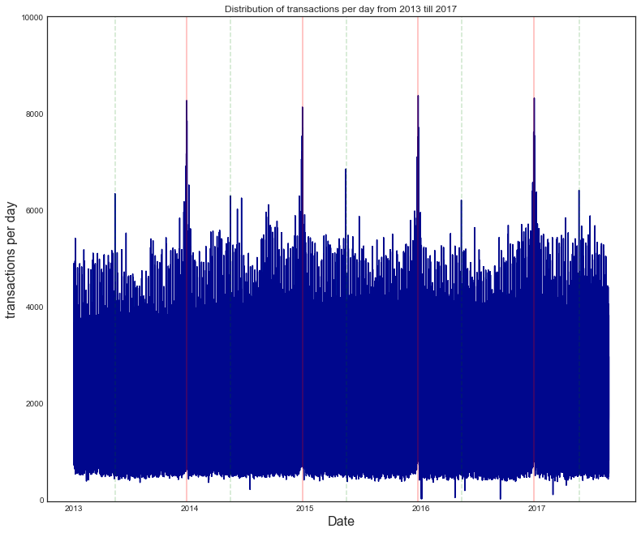

Qué pasó y cómo medirlo
¿Cuál es el comportamiento típico y cuánto varía?
Problema de negocio, datos, verificación y medidas de centro y dispersión.
DIAPOSITIVAS 4–8Analítica descriptiva y diagnóstica aplicada a las ventas de Corporación Favorita, reconstruidas en un dashboard de Power BI a partir de los datos originales.

Corporación Favorita opera cientos de supermercados en Ecuador (Supermaxi, Megamaxi, Akí) con más de 200.000 productos. En 2017 lanzó un reto en Kaggle porque planificaba con métodos subjetivos, pocos datos y poca automatización.
Sobra inventario perecedero: merma y desperdicio. El 24 % del catálogo es perecedero (986 de 4.100) y la métrica lo pondera ×1,25.
Quiebre de stock: perchas vacías, ventas perdidas y clientes molestos.


171.169 el 24-dic-2015: 2,0× el promedio diario (84.114).
25-dic sin registros y 1-ene casi en cero: tiendas cerradas, no errores.
La media móvil separa el nivel del ruido diario de fines de semana.


Quito y Guayaquil tienen menos de la mitad de las tiendas, pero casi dos tercios de las ventas.